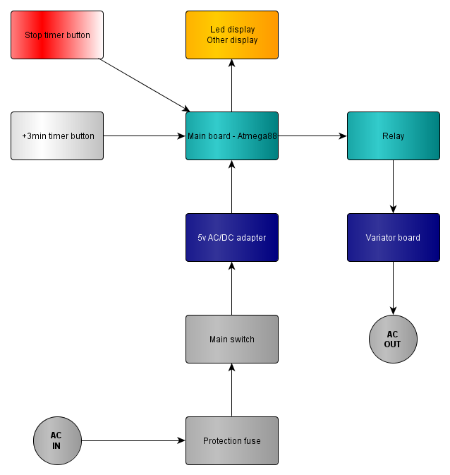

Every where I read, people say that working with the 10 $ iron is bad and should be avoided as soon as you start doing "serious things". Next step is to move to a branded iron, with a variator to control the temperature and maybe a precise selection of temperature (display or gradation). Well shame is I happen to like my 10 $ 40W iron, even if I agree it's too hot, but has the punch when needed for a quick start or some heavy job.
A few months ago I bought a simple 6$ variator kit and setup my iron on it, worked just fine. But I wanted to have more safety, especially not risk to forget my iron on. So I though of combining both: a
variator, a
light indication of the ON status, and a
timer ! 10 minutes max : press the white button and get 3 minutes of heating, press the red button and stop now.
I found afterward a video of the crazy-fantastic Dave of EEVBlog that was also having the same concern of "is my iron still on" and hacked his Hakko led
http://www.youtube.com/watch?v=rtlN0b-gkic
Functions and parts
General schema
